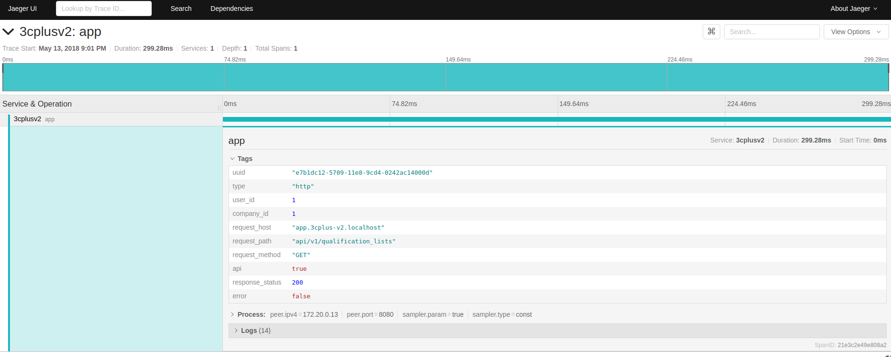

Using Opentracing/Jaeger with Laravel
May 13, 2018 22:26 · 717 words · 4 minute read
Microservices become the new standard for scalable and maintanable arquitectures. Monolithic aplications are splited into smaller pieces to keep things simple and decoupled. Tracing comes in hand when you need to aggregate the events during the request lifecycle between a single or multiple services.
Here at FluxoTi we are beginning to split our monolith application into smaller services, backed by kubernetes. Since we already have smaller services that we want to connect, we need a way to trace the request lifecycle to find bottlenecks, errors and make the debug process more easy.
1. Opentracing / Jaeger to the rescue
There’s many distributed tracing systems suck as Zipkin and Dapper, but they have incompatible APIs. Opentracing was created to fill this gap. By exposing a consistent, expressive, neutral API for popular platforms, add or switch between distributed tracing implementations becomes easy.
Jaeger is inspired by OpenZipkin and Dapper and implements the Opentracing protocol. Jaeger has clients in Java, Go, NodeJS, Python, C++, PHP among others, that’s exactly what we want. You can refer to the Opentracing introduction to understand the concepts behind a tracing system.
2. Integrating Jaeger with Laravel
To integrate jaeger with laravel we’ll need a jaeger package for php, like jukylin/jaeger-php.
There’s only 3 structures that we need to use, a Tracer, a Span and the Config. If you have read the opentracing introduction you’re probably familiar with these terms.
To keep things simple I decide to build a wrapper around the framework events, to avoid as little modifications as possible, and keep adding aditional spans to track the services in the future.
composer require jukylin/jaeger-php:dev-master@dev # jaeger php client
composer require ramsey/uuid # uuid library for the unique request id
In a service provider, registered as early as possible, add the following content:
public function boot()
{
// Setup a unique ID for each request. This will allow us to find
// the request trace in the jaeger ui
$this->app->instance('context.uuid', Uuid::uuid1());
// Get the base config object
$config = Config::getInstance();
// If in development or testing, you can use this to change
// the tracer to a mocked one (NoopTracer)
//
// if (!app()->environment('production')) {
// $config->setDisabled(true);
// }
// Start the tracer with a service name and the jaeger address
$tracer = $config->initTrace('my-app', 'jaeger:6831');
// Set the tracer as a singleton in the IOC container
$this->app->instance('context.tracer', $tracer);
// Start the global span, it'll wrap the request/console lifecycle
$globalSpan = $tracer->startSpan('app');
// Set the uuid as a tag for this trace
$globalSpan->setTags(['uuid' => app('context.uuid')->toString()]);
// If running in console (a.k.a a job or a command) set the
// type tag accordingly
$type = 'http';
if (app()->runningInConsole()) {
$type = 'console';
}
$globalSpan->setTags(['type' => $type]);
// Save the global span as a singleton too
$this->app->instance('context.tracer.globalSpan', $globalSpan);
// When the app terminates we must finish the global span
// and send the trace to the jaeger agent.
app()->terminating(function () {
app('context.tracer.globalSpan')->finish();
app('context.tracer')->flush();
});
// Listen for each logged message and attach it to the global span
Event::listen(MessageLogged::class, function (MessageLogged $e) {
app('context.tracer.globalSpan')->log((array) $e);
});
// Listen for the request handled event and set more tags for the trace
Event::listen(RequestHandled::class, function (RequestHandled $e) {
app('context.tracer.globalSpan')->setTags([
'user_id' => auth()->user()->id ?? "-",
'company_id' => auth()->user()->company_id ?? "-",
'request_host' => $e->request->getHost(),
'request_path' => $path = $e->request->path(),
'request_method' => $e->request->method(),
'api' => str_contains($path, 'api'),
'response_status' => $e->response->getStatusCode(),
'error' => !$e->response->isSuccessful(),
]);
});
// Also listen for queries and log then,
// it also receives the log in the MessageLogged event above
DB::listen(function ($query) {
Log::debug("[DB Query] {$query->connection->getName()}", [
'query' => str_replace('"', "'", $query->sql),
'time' => $query->time.'ms',
]);
});
}
This is only an example, but you can set how many tags you want, how many logs you want, and also spawn how much spans you need. For example:
// ...controller/service
$tracer = app('context.tracer');
$createCompanySpan = $tracer->startSpan('create company', [
'child_of' => app('context.tracer.globalSpan')
]);
$createUserSpan = $tracer->startSpan('create user', [
'child_of' => $createCompanySpan
]);
// call user service
// ...
// then finish the span...
$createUserSpan->finish();
// call company service
// ...
// then finish the span...
$createCompanySpan->finish();
If we inject the correct trace id between microservice calls, the next service can continue the trace and at the end we have a complete distributed tracing, isn’t that awesome?

For a more concrete example, check out my demo project.
See you again next time 😄.